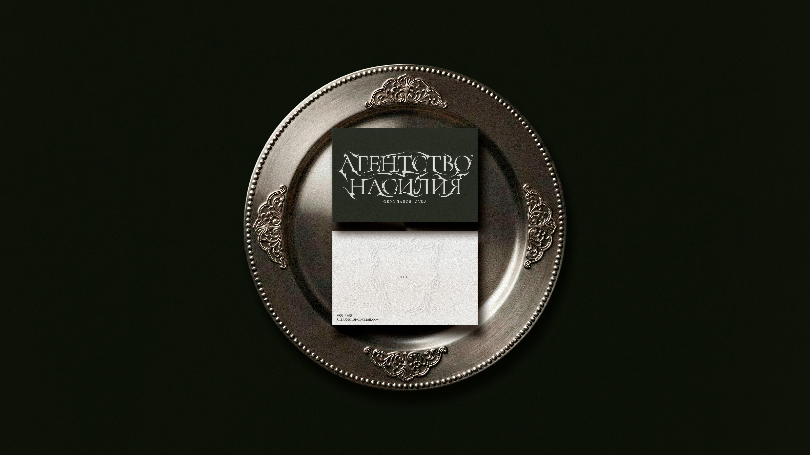
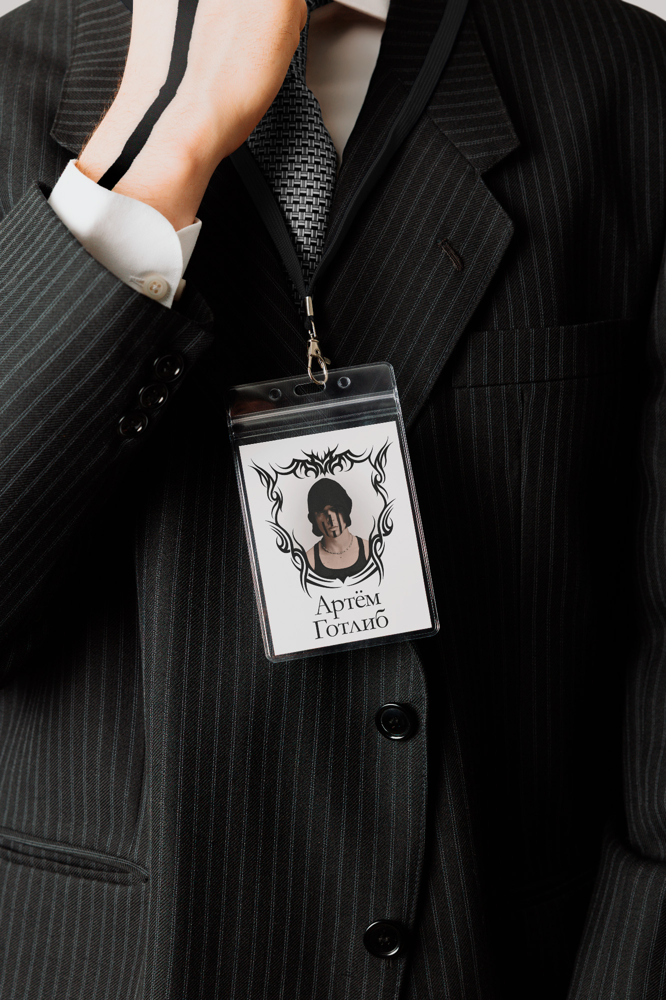
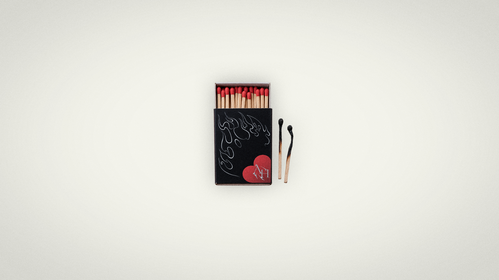
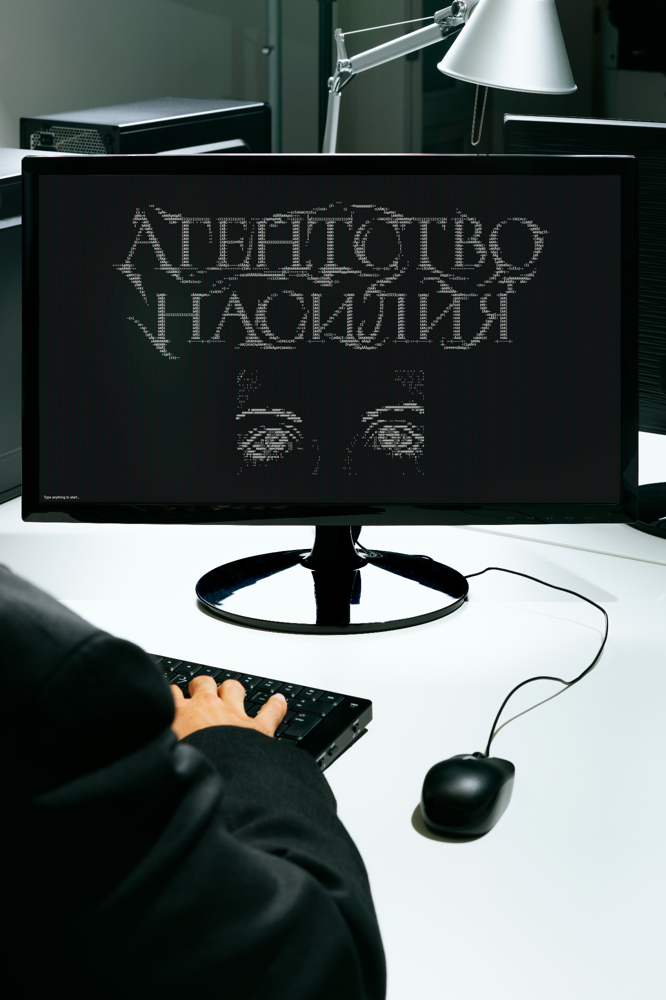
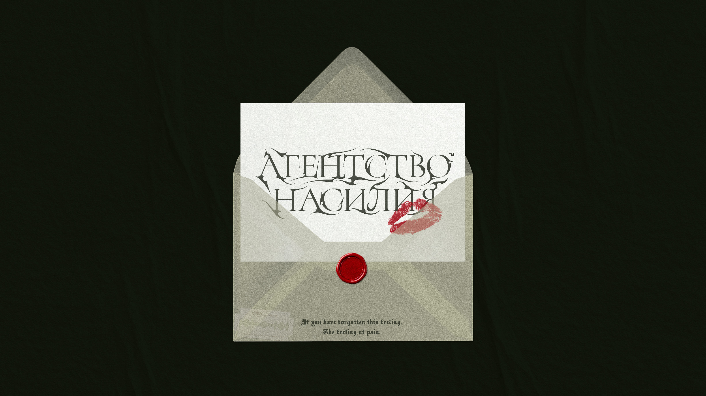
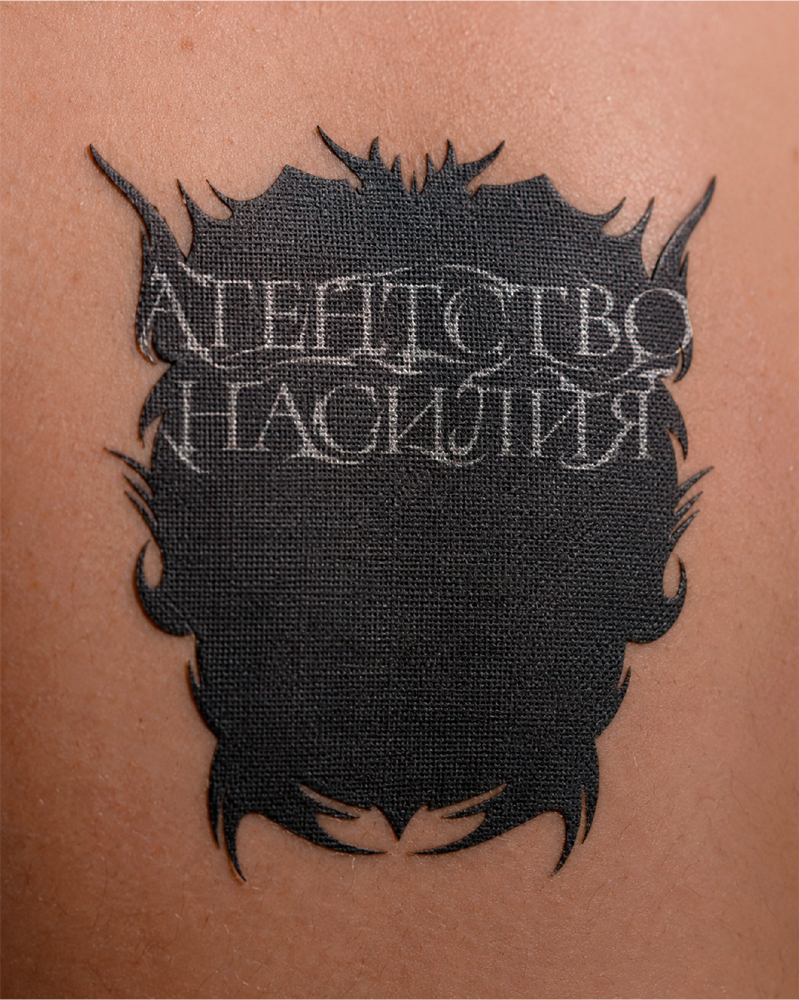
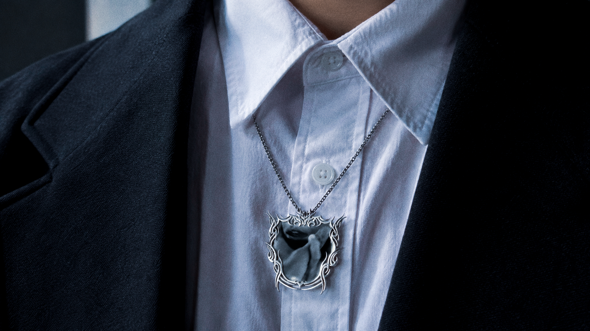
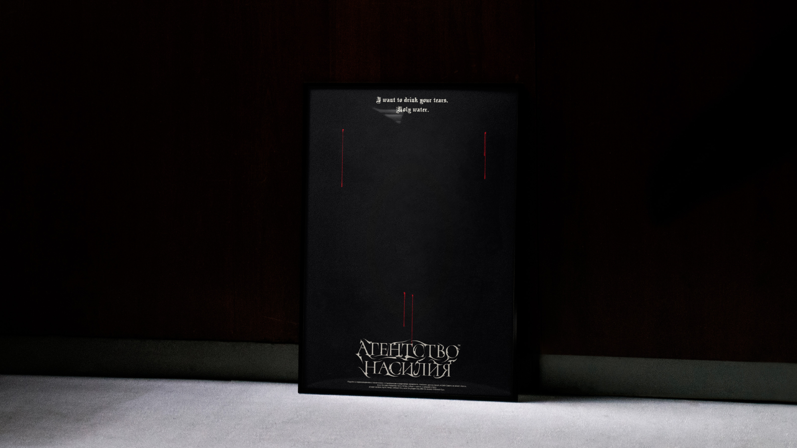

АГЕНТСТВО НАСИЛИЯ™
02 / 04
АГЕНТСТВО НАСИЛИЯ™ is a song by artists gotlibgotlibgotlib and SABU. It's the song about the agency that deal with emotional violence. And that project is a fantasy on how this agency would look if it were real.


The identity combines the aesthetics of a serious institutional agency with sharp tribal forms and subtle signs of aggression. A monochrome palette, classical serif typography and heraldic framing create a sense of authority, while small red accents disrupt the system.


The visual identity imagines АГЕНТСТВО НАСИЛИЯ™ as a fully functioning organization with its own rules, symbols and corporate culture. Every element is designed to make the fictional agency feel strangely legitimate — as if emotional violence could actually be a professional service.


The project balances seriousness and absurdity, turning the fictional concept into a visual world rather than a conventional brand. The restrained system leaves space for irony, tension and small unexpected details that reveal the artistic nature of the project.

